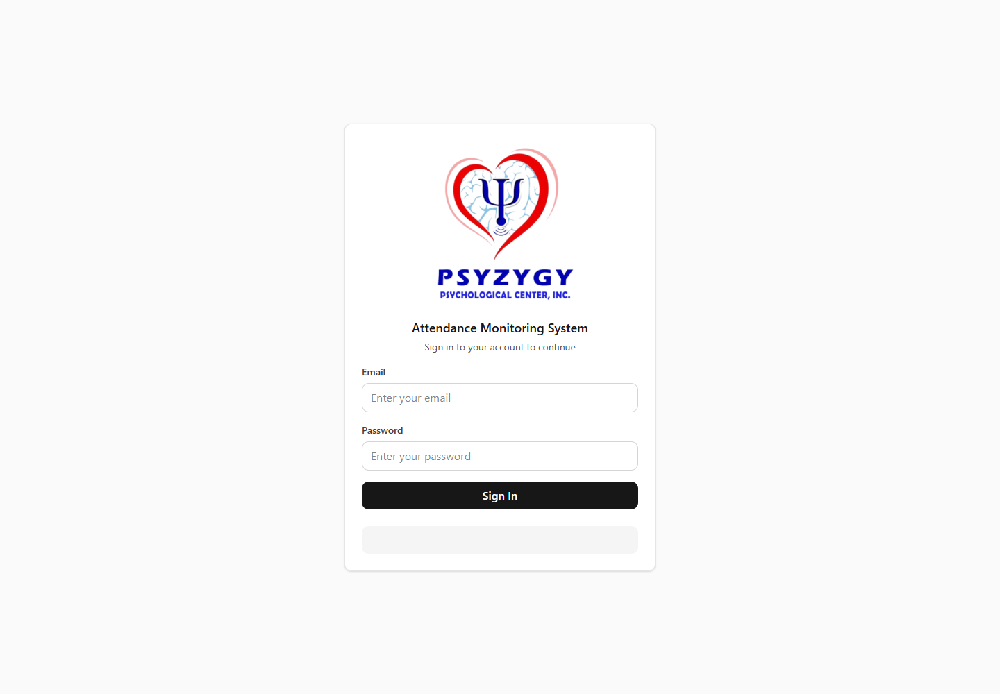
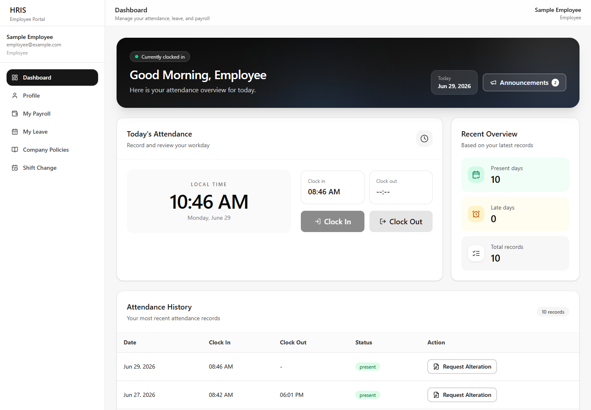
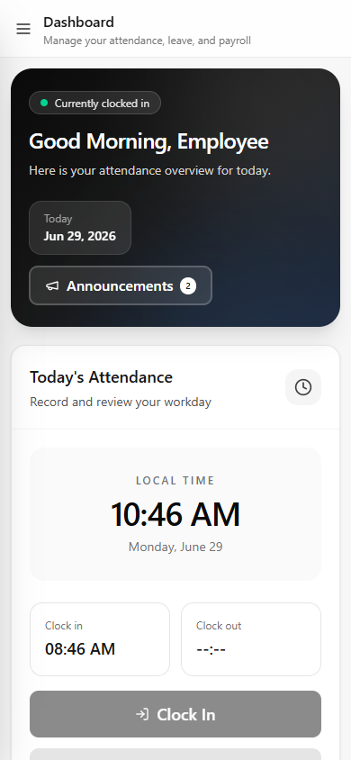
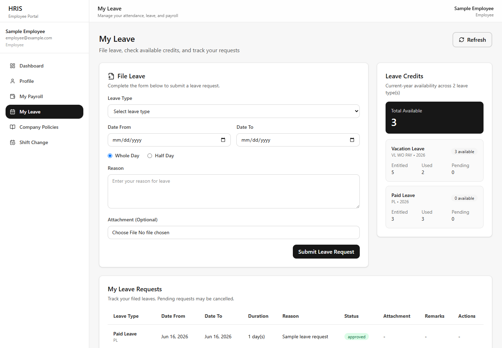
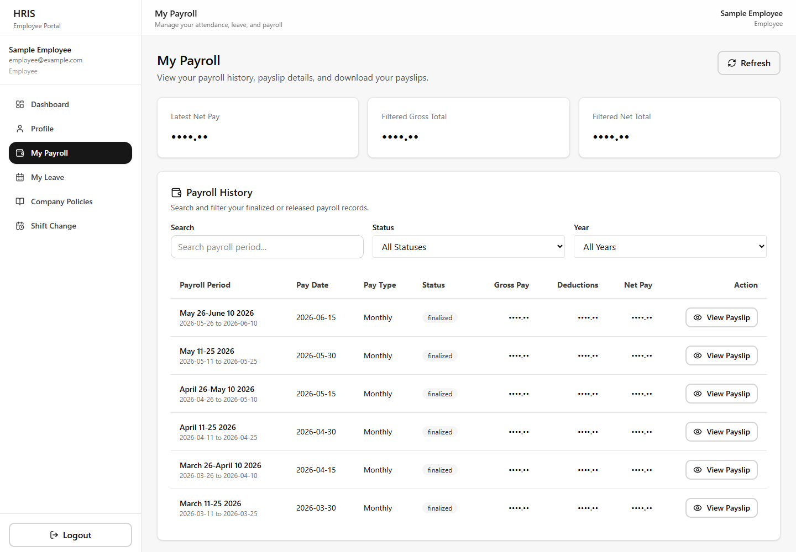
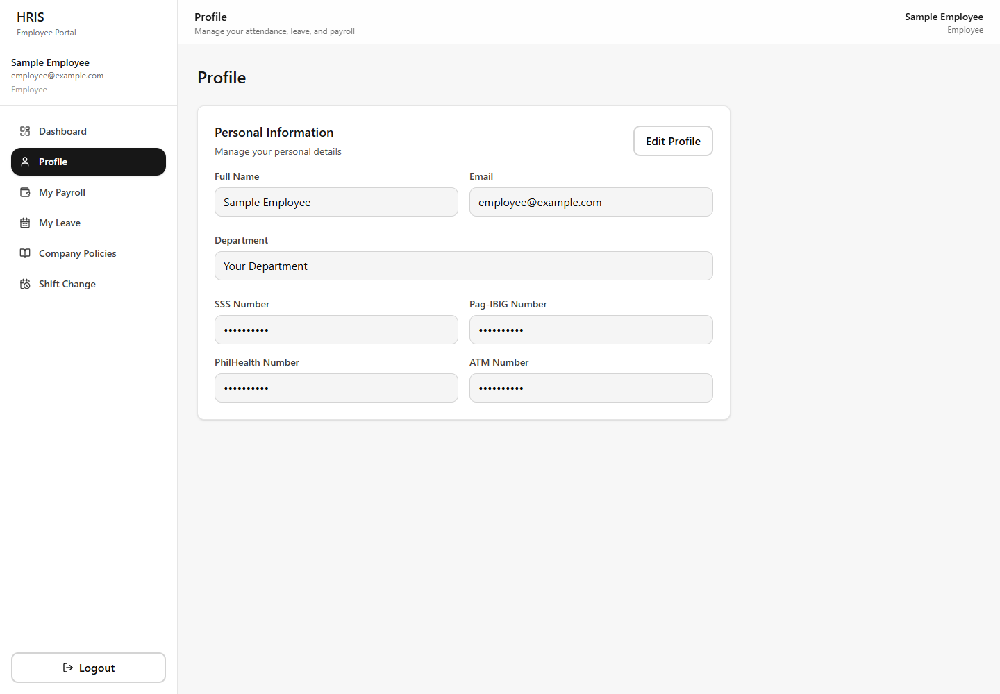
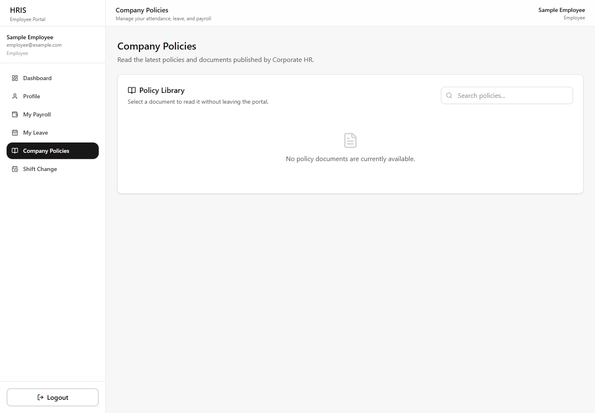
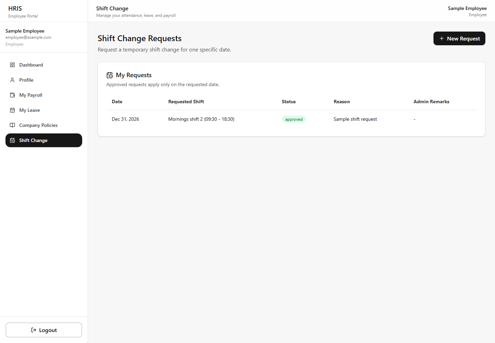

EMPLOYEE PORTAL
HRIS User Guide
A picture-by-picture guide for attendance, leave, payroll, policies, profile updates, and shift changes.
Made simple: look for the button, click it once, and read the message on the screen.
🕐 Clock in and out
🏖️ File leave
💰 Read payslips
📖 Read policies
📅 Request a shift
1. Sign in
This is the front door. Use the email and password given to you by HR.
1
Open the websitepsyzygyams.vercel.app
2
Type your emailClick the Email box and type carefully.
3
Type your passwordThe dots hide your password. That is normal.
4
Press “Sign In”Wait for your Dashboard to appear.
Keep it secret: Never send your password to another person.

2. Meet your Dashboard
The Dashboard is your home screen. The menu on the left takes you to every tool.
1
Look at your statusThe dark banner tells you if you are clocked in.
2
Check today’s timeThe big clock uses your local time.
3
Use the left menuChoose Dashboard, Profile, Payroll, Leave, Policies, or Shift Change.
4
Read announcementsPress “Announcements” when you see a number beside it.

3. Clock in, clock out, and fix a wrong time
Clock in when work starts. Clock out when work ends.
▶ Starting work
- Open Dashboard.
- Press Clock In one time.
- Check that your clock-in time appears.
■ Ending work
- Finish any required Daily Activity Log.
- Press Clock Out one time.
- Check that your clock-out time appears.
Good sign: A gray button usually means that action is already finished or not ready yet.
✏️ Wrong clock time?
- Go down to Attendance History.
- Find the correct day.
- Press Request Alteration.
- Enter the correct time and a short reason.
- Submit and wait for HR approval.
Do not guess. Enter the real time and explain what happened.
4. Use HRIS on your phone
The same tools work on a small screen. Everything stacks neatly so buttons are easy to tap.

1
Open the menuTap the three-line menu button at the top-left.
2
Scroll downSwipe up gently to see attendance history and more tools.
3
Tap onceWait after tapping Clock In, Clock Out, or Submit.
4
Turn the phone if neededLandscape view can make wide information easier to read.
Internet check: If nothing happens, make sure Wi-Fi or mobile data is on.
5. File a leave request
Use “My Leave” to ask for time away and check how many leave credits are available.
1
Choose My LeaveFind it in the left menu.
2
Check Leave Credits“Available” shows what you can still use.
3
Fill the formPick a leave type, dates, whole/half day, and write a reason.
4
Add a file if askedSome leave types require proof or an attachment.
5
SubmitLook below the form to follow the request status.

6. Read your payroll and payslip
Your pay information is private. Only open it where other people cannot look over your shoulder.
1
Choose My PayrollYour latest pay and payroll history appear here.
2
Find a pay periodUse Search, Status, or Year when the list is long.
3
Press View PayslipYou will see earnings, deductions, and net pay.
4
Download if neededSave the payslip only on your own device.
Private: Do not post a payslip in a public chat or social media.

7. Check or update your Profile
Your profile holds your personal, government, and bank information.
1
Choose ProfileCheck that your information is correct.
2
Press Edit ProfileEditable boxes will become available.
3
Fix the informationType slowly and check every number.
4
Save ChangesWait for the success message before leaving.
Be careful: SSS, Pag-IBIG, PhilHealth, and ATM numbers must be exact.

8. Read Company Policies
Corporate HR places important PDF documents in the Policy Library.
1
Choose Company PoliciesOpen it from the left menu.
2
Find a policyUse the Search box when many documents are available.
3
Click the policy cardThe PDF opens in a large pop-up reader.
4
Read or open a new tabScroll through the PDF, then press Close when done.
Empty library? It only means Corporate HR has not published a document yet.

9. Ask for a temporary Shift Change
Use this when you need a different shift on one specific date.
1
Choose Shift ChangeYour old requests and their status appear here.
2
Press New RequestA small form will open.
3
Pick the date and shiftChoose the exact day and the shift you need.
4
Write the reasonUse a short, honest explanation.
5
Submit and waitThe change applies only after approval.

10. Remember these simple rules
A small checklist keeps your HRIS records safe and correct.
Every workday
- ✓ Clock in only when work starts.
- ✓ Complete required activity logs.
- ✓ Clock out only when work ends.
- ✓ Check that the time appears.
Keep your account safe
- ✓ Keep your password secret.
- ✓ Do not share payslips publicly.
- ✓ Press Logout on a shared device.
- ✓ Ask HR when something looks wrong.
Need help? Take a screenshot of the error message and send it to your HR or system administrator. Never include your password.